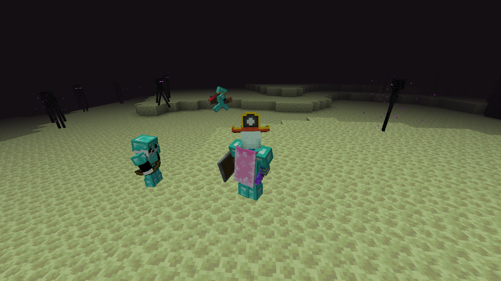

Gekken in "The End"

The End
Afgelopen vrijdag was de Enderdragon fight! Was super cool :emotji_met_zonnebril:
Elytra?
Door de gelimiteerde wereld (Worldborder; Lees: 1 week gek) zijn er veel minder End cities, dus minder Elytra's! Ik weet zelf niet hoeveel er zijn, maar ze zijn zeldzaam. Dus ga er niet mee dood!
Reclame!!!
Dit is de eerste krant waar je reclame kon kopen, JIPPIE!!!
Wankers Wood; We've got Wood!
Aldus, de Reporters Joellizzy en _atheron_ van de Gekkies Krant